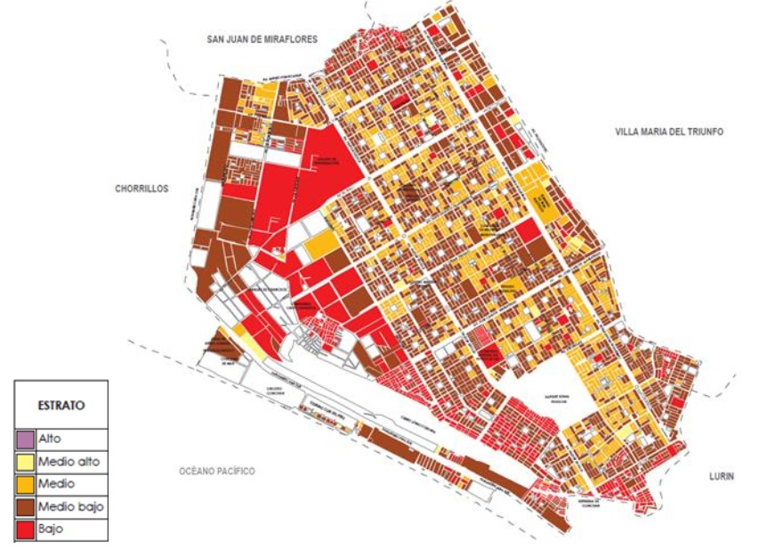
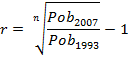

Contenido
Datos Generales
El distrito se encuentra ubicado al sur de Lima Metropolitana y es uno de los 43 distritos de la provincia de Lima, departamento de Lima. Cuenta con una superficie de 35,46 km2 y tiene una altitud media de 143 msnm. Se fundó el 11 de mayo de 1971, adquiriendo la categoría de distrito el 1 de junio de 1983 a través de la Ley N° 23695. En la ilustración 1 se muestra la ubicación del distrito.
Ubicación y Geografía
El distrito de Villa el Salvador está ubicado al sur de Lima, entre los Km 15.5 y 25 de la Carretera Panamericana Sur. Ocupa un área de 35.460 km2, subdividido en territorios, urbanizaciones, sectores, grupos y manzanas. Está asentado sobre el desierto de la Tablada de Lurín, en la zona de intercuenca de Lurín y Rímac.
Está comprendido entre las coordenadas geográficas:
Latitud : 12° 12´ 34”
Longitud : 76° 56´ 08"
Altitud : Comprendida desde 0 a 180 msnm.
Tiene como limites:
Por el norte : San Juan de Miraflores y Villa María del Triunfo.
Por el Sur : Lurín.
Por el Este : Villa María del Triunfo.
Por el Oeste : Chorrillos y el Océano Pacífico..
Aspectos Socio Ambientales
La interrelación entre la población y su ambiente tiene mayor perceptibilidad en la zona de playas (temporada de verano) y en los parques de cada grupo residencial, contándose las alamedas y los parques administrados por la Municipalidad Metropolitana de Lima.
Climatología
El clima está caracterizado por ser subtropical, es árido, semi cálido y nuboso en distintas épocas del año, con una temperatura media anual que fluctúa entre los 15 ºC y 23ºC, los valores extremos corresponden a los meses de julio y febrero respectivamente, con una nubosidad media de 8 octavos, la humedad relativa media varía entre 80 y 100%, los vientos soplan durante el día, de norte a suroeste y durante la noche de suroeste a norte. La precipitación media es de 25 mm anuales. Los vientos tienen una velocidad media de 2 a 4 m/s esta baja intensidad en la velocidad de los vientos hace que los contaminantes de la atmósfera no se dispersen en la magnitud como debería ser, lo cual constituye un lento transporte de los mismos.
Agua y Alcantarillado
Los servicios de agua potable y alcantarillado son administrados por SEDAPAL y la principal fuente de abastecimiento de agua potable es el río Rímac, cuyos caudales varían entre 15,2 m3/s (setiembre) y 66,2 m3/s (febrero, época de precipitaciones en la sierra).
La precipitación pluvial es mínima (25,48 mm/año), por lo que no podría ser considerada como fuente de recursos hídricos. Las aguas subterráneas son otra fuente importante de agua potable; SEDAPAL registra en el distrito la existencia de 15 pozos (para riego y bebida de animales) que generan 537 L/s de agua.
Población
Una de las particularidades de la dinámica poblacional en el distrito de Villa el Salvador es la de haber sido receptora natural de un gran número de personas demandando un espacio para poder habitar. Este fenómeno ha devenido en un acelerado crecimiento de su población a consecuencia de un constante proceso migratorio o de reubicación de pobladores.
Una de las características de Villa el Salvador desde su fundación fue la de haber sido una de las pocas ciudades populares construidas de manera planificada.
En un inicio se pensó que esta joven ciudad organizaría su territorio en 10 sectores y que albergaría un determinado número de viviendas. Sin embargo, el crecimiento poblacional que experimentaría esta ciudad en las siguientes décadas, desbordarían las proyecciones más conservadoras.
Zonificación
De acuerdo al documento “Planos estratificados de Lima Metropolitana a Nivel de Manzanas según Ingreso Per cápita del Hogar”(1), en el distrito de Villa El Salvador se presentan cuatros estratos socioeconómicos, como se observa en el cuadro 1.
Cuadro 1 . Estratos socioeconómicos de Villa el Salvador
| Nivel | Ingreso per cápita p/hogares (Soles) | Hogares | Manzanas |
|---|---|---|---|
| Medio alto | 1 330,10 – 2 92,19 | 105 | 17 |
| Medio | 899,00 – 1330,09 | 24 194 | 802 |
| Medio bajo | 575,70 – 898,99 | 49 231 | 1 836 |
| Bajo | Menor de 575,69 | 9 305 | 558 |
| Total | 82 835 | 3 213 |
Fuente: Planos estratificados de Lima Metropolitana a Nivel de Manzanas según Ingreso Per cápita del Hogar, INEI, 2016.
Complementariamente, se analizó la distribución presentada en el Plano estratificado de Villa el Salvador (ilustración 3) y verificándose en campo se determinó como válido solo tres estratos socioeconómicos en el distrito de Villa El Salvador, los cuales son: Medio, Medio bajo y Bajo.
Ilustración 3 . Plano estratificado de Villa el Salvador a nivel de manzanas
Fuente: Planos estratificados de Lima Metropolitana a Nivel de Manzanas según Ingreso Per cápita del Hogar, INEI, 2016.
Determinación y proyección de la población actual
Para realizar la proyección de la población urbana al año 2017, se utilizaron los datos de población de los años 1993 y 2007, según las cifras oficiales de los censos del INEI, como se muestra en el cuadro 2.
Cuadro 2 . Población distrital según censos 1993 y 2007
| Año | Población del distrito |
|---|---|
| 1993 | 254 641 |
| 2007 | 381 082 |
Fuente: INEI, Censos poblacionales 1993 y 2007
Para hallar la tasa de crecimiento (r) se ha utilizado la siguiente fórmula:
|  |
Donde:
Pob 2007: Población en el último año de datos censales (2007)
Pob 1993: Población en el anterior año de datos censales (1993)
r: Tasa de crecimiento de la población.
Por lo que la tasa de crecimiento (r) de la cantidad de población en el distrito de Villa el Salvador es de 2,92 %
Con este dato se estima, la cantidad de población al año 2017, aplicando la siguiente fórmula:
Donde:
Pobf: Población al año en el que se desea proyectar.
Pobo: Población en el último año de datos censales (2007).
r: Tasa de crecimiento de población.
n: Cantidad de años entre el 2007 y el año al que se desea estimar Pobf.
Con esta información, se estima que la población del distrito de Villa el Salvador al año 2017 es de 508 256 habitantes, como se observa en el cuadro 3. Cuadro 3 . Proyección de la población al 2017
| Año | Población del distrito |
|---|---|
| 2007 | 381 082 |
| 2008 | 392 216 |
| 2009 | 403 674 |
| 2010 | 415 468 |
| 2011 | 427 606 |
| 2012 | 440 099 |
| 2013 | 452 957 |
| 2014 | 466 191 |
| 2015 | 479 811 |
| 2016 | 493 829 |
| 2017 | 508 256 |
Fuente: Elaboración propia